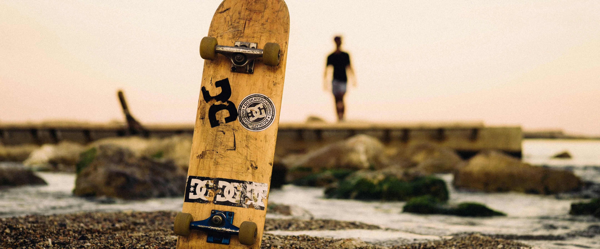

Почитать ещё


5 мин
как выбрать скейтборд?
Расскажем о том, как не превратиться в жертву своей же страсти.

Личности
5 мин
История скейтбординга
Расскажем о том, как не превратиться в жертву своей же страсти.

5 мин
чеклист перед контестом
Расскажем о том, как не превратиться в жертву своей же страсти.